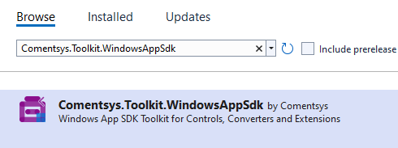
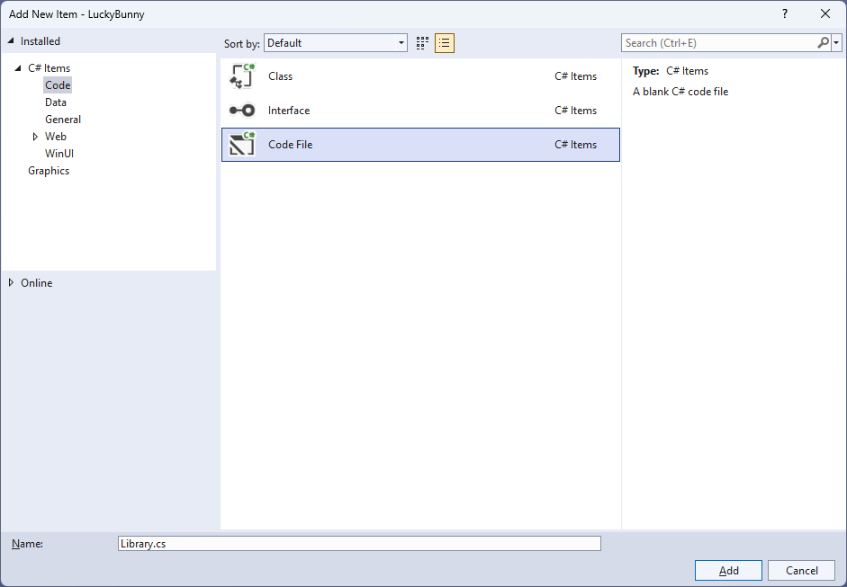
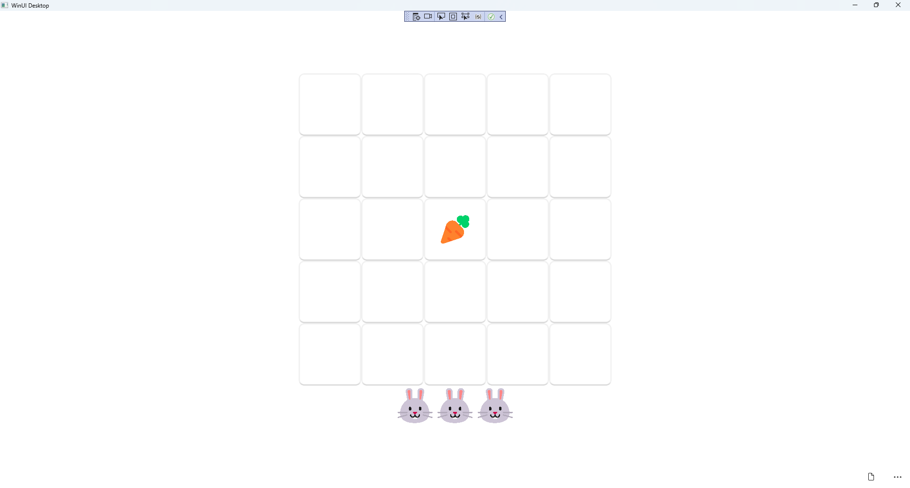

Lucky Bunny
Learn creating a Lucky Bunny game using Windows App SDK with this Tutorial
Lucky Bunny shows how you can create a simple game where the aim is to select the Carrot but if you miss then you lose a Bunny but if you lose three you lose the game but if you get them all you win the game, using emoji and a toolkit from NuGet using the Windows App SDK.
Step 1
Follow Setup and Start on how to get Setup and Install what you need for Visual Studio 2022 and Windows App SDK.


Step 2
Then in Visual Studio within Solution Explorer for the Solution, right click on the Project shown below the Solution and then select Manage NuGet Packages...

Step 3
Then in the NuGet Package Manager from the Browse tab search for Comentsys.Toolkit.WindowsAppSdk and then select Comentsys.Toolkit.WindowsAppSdk by Comentsys as indicated and select Install

This will add the package for Comentsys.Toolkit.WindowsAppSdk to your Project. If you get the Preview Changes screen saying Visual Studio is about to make changes to this solution. Click OK to proceed with the changes listed below. You can read the message and then select OK to Install the package.
Step 4
Then while still in the NuGet Package Manager from the Browse tab search for Comentsys.Assets.FluentEmoji and then select Comentsys.Assets.FluentEmoji by Comentsys as indicated and select Install

This will add the package for Comentsys.Assets.FluentEmoji to your Project. If you get the Preview Changes screen saying Visual Studio is about to make changes to this solution. Click OK to proceed with the changes listed below. You can read the message and then select OK to Install the package, then you can close the tab for Nuget: LuckyBunny by selecting the x next to it.
Step 5
Then in Visual Studio within Solution Explorer for the Solution, right click on the Project shown below the Solution and then select Add then New Item…

Step 6
Then in Add New Item from the C# Items list, select Code and then select Code File from the list next to this, then type in the name of Library.cs and then Click on Add.

Step 7
You will now be in the View for the Code of Library.cs, within this type the following Code:
using Comentsys.Assets.FluentEmoji;
using Comentsys.Toolkit.WindowsAppSdk;
using Microsoft.UI.Xaml;
using Microsoft.UI.Xaml.Controls;
using System;
using System.Collections.Generic;
using System.Linq;
public class Library
{
private const string title = "Lucky Bunny";
private const int size = 5;
private const int bunnies = 3;
private const int maximum = 25;
private const double timer = 1;
private const bool bunny = true;
private const bool carrot = false;
private readonly Random _random = new((int)DateTime.UtcNow.Ticks);
private DispatcherTimer _timer;
private Dialog _dialog;
private Panel _panel;
private Grid _grid;
private List<int> _numbers;
private int _current;
private int _missed;
private bool _over;
private List<int> Choose(int minimum, int maximum, int total) =>
Enumerable.Range(minimum, maximum)
.OrderBy(r => _random.Next(minimum, maximum))
.Take(total).ToList();
// Get Asset, Get Content, Set Content, Over & Miss
// Add
// Layout & New
}
The Class defined so far Library.cs has using for package of Comentsys.Assets.FluentEmoji and others.
It also has Constants to represent things needed in the game you can even change the values to make the game more difficult or easier if
needed. There are Variables to keep track of values used in the game and elements for the look-and-feel of the game as well as a Method
for Choose which is used to select a list of randomised numbers.
Step 8
Still in the Class for Library.cs after the Comment of // Get Asset, Get Content, Set Content, Over & Miss type the following Methods:
private Asset GetAsset(bool? isBunny = null) =>
new()
{
AssetResource = FlatFluentEmoji.Get(
isBunny switch
{
bunny => FluentEmojiType.RabbitFace,
carrot => FluentEmojiType.Carrot,
_ => FluentEmojiType.None
})
};
private Asset GetContent(int counter) =>
_numbers[_current] == counter ? GetAsset(false) : GetAsset();
private void SetContent()
{
foreach (var button in _grid.Children.Cast<Button>())
{
button.Content = GetContent((int)button.Tag);
}
}
private void Over()
{
if (_over)
_dialog.Show("Game Over!");
}
private void Miss()
{
if (!_over)
{
_panel.Children.Remove(_panel.Children.FirstOrDefault());
_panel.Children.Add(GetAsset());
_missed++;
if (_missed >= bunnies)
{
_timer.Stop();
_over = true;
}
}
Over();
}
GetAsset is used to get an asset for the emoji used in the game and GetContent is used to get the correct Asset based on the value
passed in and is used by SetContent to update the Content for a Button. Over is used to display when the game is over
and Miss is used to indicate when a carrot has been missed.
Step 9
While still in the Class for Library.cs after the Comment of // Add
type in the following Method:
private void Add(Grid grid, int row, int column, int index)
{
Button button = new()
{
Width = 50,
Height = 50,
Tag = index,
Content = GetContent(index)
};
button.Click += (object sender, RoutedEventArgs e) =>
{
if (!_over)
{
if (_current < maximum - 1)
{
var value = (int)button.Tag;
if (_numbers[_current] == value)
{
_current++;
SetContent();
_timer.Start();
}
else
{
Miss();
}
}
else
{
_dialog.Show($"You Won with {_missed} missed!");
_timer.Stop();
}
}
Over();
};
button.SetValue(Grid.ColumnProperty, column);
button.SetValue(Grid.RowProperty, row);
grid.Children.Add(button);
}
Add will be used to create a Button and then set the Content using GetContent then it will check if the game is not complete,
if it is then a message will be displayed to indicate this then there is checked to see whether the correct selection has been
made then it will select the next position and start the timer.
Step 10
While still in the Class for Library.cs after the Comment of // Layout & New
type in the following Methods of Layout which creates the look-and-feel of the game and New which begins a game.
private void Layout(Grid grid)
{
int index = 0;
grid.Children.Clear();
var panel = new StackPanel()
{
Orientation = Orientation.Vertical
};
_grid = new Grid();
for (int row = 0; row < size; row++)
{
_grid.RowDefinitions.Add(new RowDefinition());
for (int column = 0; column < size; column++)
{
if (row == 0)
_grid.ColumnDefinitions.Add(new ColumnDefinition());
Add(_grid, row, column, index);
index++;
}
}
panel.Children.Add(_grid);
_panel = new StackPanel()
{
Orientation = Orientation.Horizontal,
HorizontalAlignment = HorizontalAlignment.Center
};
for (int counter = 0; counter < bunnies; counter++)
{
_panel.Children.Add(GetAsset(true));
}
panel.Children.Add(_panel);
grid.Children.Add(panel);
}
public void New(Grid grid)
{
_dialog = new Dialog(grid.XamlRoot, title);
_numbers = Choose(0, size * size, maximum);
_timer = new()
{
Interval = TimeSpan.FromSeconds(timer)
};
_timer.Tick += (object sender, object e) =>
Miss();
_over = false;
_current = 0;
_missed = 0;
Layout(grid);
}
Step 11
Step 12
In the XAML for MainWindow.xaml there will be some XAML for a StackPanel, this should be Removed:
<StackPanel Orientation="Horizontal"
HorizontalAlignment="Center" VerticalAlignment="Center">
<Button x:Name="myButton" Click="myButton_Click">Click Me</Button>
</StackPanel>
Step 13
While still in the XAML for MainWindow.xaml above </Window>, type in the following XAML:
<Grid>
<Viewbox>
<Grid Margin="50" Name="Display"
HorizontalAlignment="Center"
VerticalAlignment="Center" Loaded="New"/>
</Viewbox>
<CommandBar VerticalAlignment="Bottom">
<AppBarButton Icon="Page2" Label="New" Click="New"/>
</CommandBar>
</Grid>
This XAML contains a Grid with a Viewbox which will Scale a Grid.
It has a Loaded event handler for New which is also shared by the AppBarButton.
Step 14
Step 15
In the Code for MainWindow.xaml.cs there be a Method of myButton_Click(...) this should be Removed by removing the following:
private void myButton_Click(object sender, RoutedEventArgs e)
{
myButton.Content = "Clicked";
}
Step 16
Once myButton_Click(...) has been removed, within the Constructor of public MainWindow() { ... } and below the line of this.InitializeComponent(); type in the following Code:
private readonly Library _library = new();
private void New(object sender, RoutedEventArgs e) =>
_library.New(Display);
Here an Instance of Library is created then below this is the Method of New that will be used with Event Handler
from the XAML, this Method uses Arrow Syntax with the => for an expression body which is useful when a Method only has one line.
Step 17
Step 18
Once running you can then select a Carrot then you must be quick to select the next Carrot and so on until you win, if you're too slow or you miss you lose one Bunny and if you lose them all you lose the game, or you can select New to start a new game.
